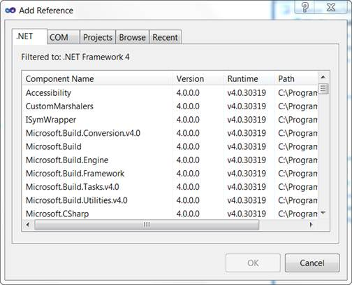
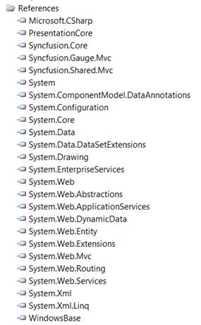

To Add Reference Assemblies:
1. On the Solution Explorer, right-click References folder, and then click Add Reference.

Figure 42: Add Reference option displayed on right-clicking the References Folder
 Note: The Add Reference dialog box appears
and the .NET tab is highlighted by default. The assemblies for the MVC
application are listed here.
Note: The Add Reference dialog box appears
and the .NET tab is highlighted by default. The assemblies for the MVC
application are listed here.

Figure 43: Add Reference Dialog Box
2. Select the following assemblies: Syncfusion.Core, Syncfusion.Gauge.Mvc , Syncfusion.Shared.Mvc , PresentationCore and WindowsBase.
3. Click OK.
Note: The selected assemblies are added
under References.

Figure 44: Selected Assemblies displayed under the References Folder